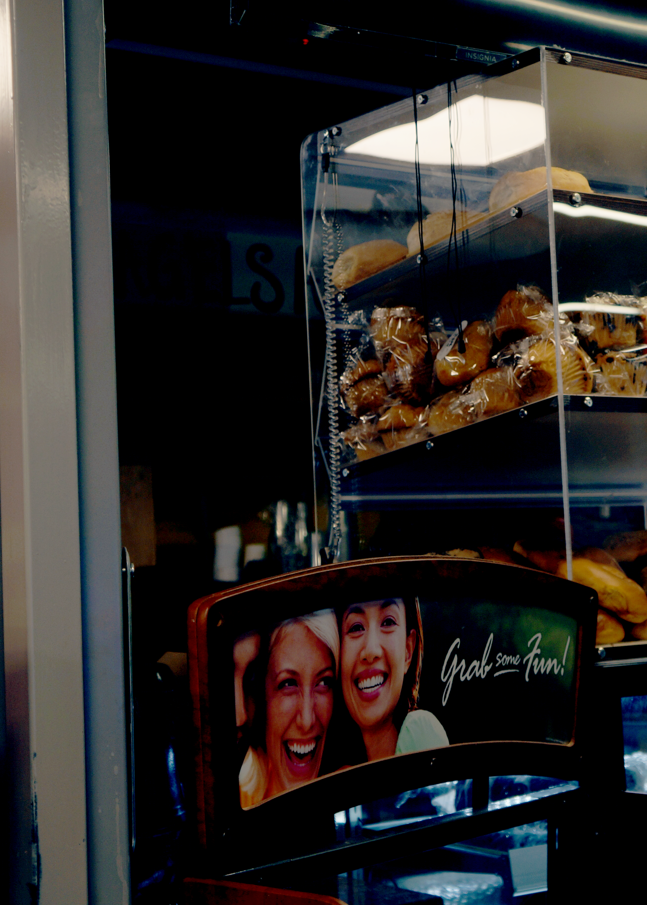

I chose this image because it gave me a feeling of nostalgia especially with the colors and imagery. It reminds me of early 2000s movies filmed at universities with a Tuscan aesthetic. When editing this photo I focused on making the image a bit cooler to give it some contrast with the original image and it highlights certain parts of the image such as the bread in the back and the girls in the photo.